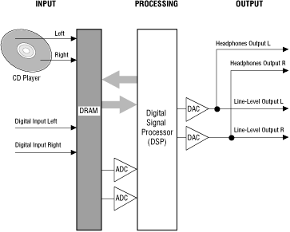
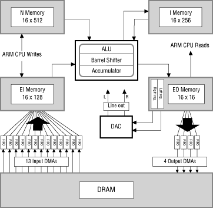

Figure 1: Audio input and output processing.
The 3DO system can accept audio input from the following sources:
The fundamental code necessary to play back a Red Book CD is stored in the 3DO system ROM so that a user can simply turn on a 3DO system, place a CD in the drive, press a play button, and listen to the CD. Simple Red Book playback does not require a CD containing the Portfolio boot files.
The CD player also reads Yellow Book CDs, spinning the CD at double the standard rate to provide faster data access. Portfolio can read sampled sound files from these CDs; the files are typically stored using the AIFF standard maintained by Electronic Arts and Apple Computer. These sampled-sound files can be fed directly to the DSP.

Figure 2: DSP features.
To accept sample input from DRAM, the DSP has 13 input DMA channels that feed to the DSP input memory. To process those samples, the DSP provides an ALU (arithmetic logic unit), multiplier, barrel shifter, and accumulator. It also provides internal instruction memory for DSP instructions and internal memory for processed data. To put processed data back out to the rest of the system, the DSP provides output memory with two registers that feed directly to the output DACs, and four output DMA channels that write samples back to DRAM.
EI memory is designed to accept input data from external sources. It contains 128 16-bit registers. Thirteen of those registers are devoted to the input DMA channels, one register per channel. The ARM(TM) CPU can write directly to EI memory, but cannot read from it. The DSP can read EI memory, but cannot write to it.
EO memory contains sixteen 16-bit registers that are readable by the CPU. It also contains two 16-bit registers that are connected directly to the DACs: one (called the left register) to the left DAC; the other (called the right register) to the right DAC. When the DACs put out digital audio, they read the contents of the left and right registers, convert whatever contents they find there into an analog signal, and send that signal to the line outputs and the headphone jack.
EO memory also contains four registers that are connected to the FIFOs of four output-DMA channels. Those FIFOs are each 16 bits wide and 8 samples deep; they buffer output to a DMA channel that can write directly to DRAM. These four output-DMA channels allow processed audio data to be written to DRAM, where it can be read again by the DSP input DMAs, a technique that creates delay effects such as reverb and those used for 3-D sound effects created by the 3-D library.
When the DSP runs in cyclic mode, it starts each cycle by running through the program instructions in its N memory. At the end of each cycle, the DSP goes to sleep and waits for an outside source to reset the DSP state and start a new cycle. In the new cycle, program execution begins again from the beginning of the program instructions in N memory. The contents of the DSP memory banks (EI, EO, I and N) are not automatically reset between cycles, although they will probably be affected by whatever instructions the DSP executes during the cycle, and so are changed per cycle by the running DSP.
Cyclic mode is usually used to execute a set of instructions for each sample pair sent out to external audio by the DACs. To do so, it must cycle 44,100 times per second (approximately once every 22 microseconds, or every 568 system ticks) in perfect synch with the DAC cycles. To guarantee synchronization no matter what brand of DAC a 3DO hardware manufacturer chooses to specify for its 3DO systems, the DSP offers audlock cycling, cycling control that reads the DAC crystal for timing information, and locks the DSP cycles to match the DAC cycles.
On some occasions, a task may want to use the DSP at a cycle rate that does not synchronize with the DAC cycles. For example, it may need to provide processing only once every two or three DAC cycles, or it may need to provide processing in cycles that do not correspond at all to the DAC cycles. If so, the DSP offers system cycling where it sets the cycle according to the 3DO internal timers. The length of each cycle is set by the contents of an internal DSP register.
When the DSP is used for nonaudio processing, it can operate in free-running mode, where it simply executes the instructions in N memory and then stops without resetting its state. Free-running mode can also be used for audio programming if desired, with the DSP polling the DAC FIFO to see if it should start over again. This polling allows the free-running DSP to run in cycles that match the DAC cycles.